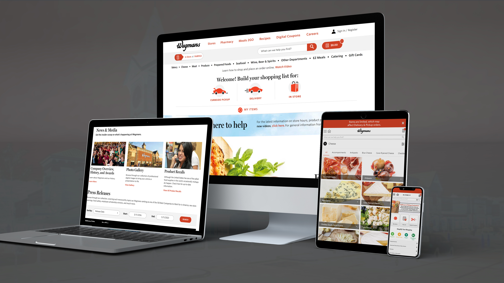
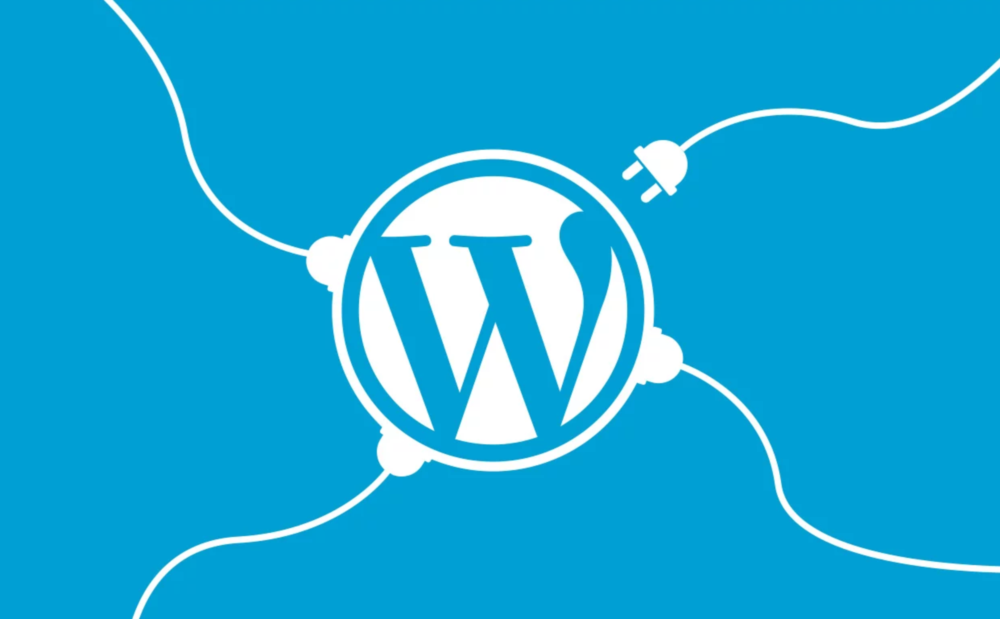

Wegmans
Web Application Developer Co-Op
- Project Link: https://wegmans.com
https://shop.wegmans.com - Agile: Azure
- Languages: JavaScript, PHP, HTML, CSS, C#
- Time Frame: June 2019 - January 2020
I was a part of the Wegmans Web Application Development Team. I was involved within the front-end development team where we developed the Wegmans.com pages through developing a custom Wordpress theme using PHP and JavaScript, login functionality using Azure B2C, and working to communicate with Wegmans UX designers on the website. At points of the project when resources were needed, I moved to the back-end development team to work on JSON databases and C# sorting algorithms for Shop.Wegmans.com. Towards the end of the project, I was involved within Quality Assurance for the website, mobile app, and IT Support for Wegmans Employees having trouble with any Wegmans software/finding bugs.
The Process
Our team worked within an Agile environment using Microsoft Azure DevOps. I was involved in daily standups, sprint cycles, corporate meetings, and discussing ideas with developers/designers from companies including Instacart, Unata, and Solu. We also had access to all the other team's development boards using Jira. Our team heavily relied on communication, as we used Slack and Microsoft Teams to communication with fellow developers, designers, Wegmans Administrators, Instacart, Unata, and Solu.

Wordpress Development

I was tasked with helping the front end development team build their custom WordPress theme using primarily PHP, JavaScript, HTML and CSS. I was also required to create and use custom plugins that would help the Wegmans.com website be more efficient, while making it easy for anyone with little knowledge to create a blog post or change banners/images on the website. We also worked on helping improve Wegmans SEO. I also helped develop off of Zeplin Prototypes from professional Wegmans UX Designers, which took a lot of communication from our development and design team to make both sides satisfied.
Through working at a corporation that's so large, I gained connections with other interns, Wegmans employees, Wegmans corporate higher-ups, and even designers and developers from other companies. We were able to collaborate on various ideas to improve our projects, from people working on the Wegmans employee portal, to accountant work, to environmental preservation efforts that Wegmans was enforcing. Through these connections I brought back valuable information and knowledge to my team to improve on our project. These connections were irreplaceable, and these were more solidified by having activities outside the office as well to build these connections further by having a volleyball league, going out for lunch, and getting breakfast pizza!
{kind=link}